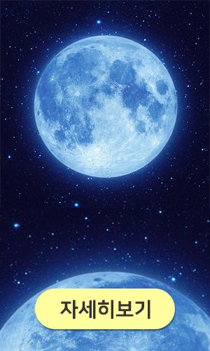

<!DOCTYPE html>
<html lang="ko">
<head>
    <meta charset="UTF-8">
    <meta http-equiv="X-UA-Compatible" content="IE=edge">
    <meta name="viewport" content="width=device-width, initial-scale=1.0">
    <title>usemap속성을 이용한 팝업창</title>
</head>
<body>
    <!-- 이미지 태그에 width속성 또는 height속성을 이용해 이미지 크기 조정 가능
        둘 중 한 속성만을 사용해서 다른 한 쪽은 비율에 맞게 조정하세요!
          -->
    
    <map name="event">
        <!-- coords="x1,y1,x2,y2" -->
        <area shape="rect" coords="50,410,250,468" href="http://naver.com" alt="자세히보기" target="_blank">
    </map>

    <!-- 500*300 배너이미지 만들기 : 버튼 2개 넣기
        링크주소 : 네이버, 구글
        usemap속성과 <map>, <area>를 이용해 하나의 이미지에 링크영역 2개 넣기 -->
    
    <map name="banner">
        <area shape="rect" coords="58,226,208,276" href="http://naver.com" alt="bannerLink" target="_blank">
        <area shape="rect" coords="298,226,448,276" href="http://google.com" alt="bannerLink" target="_blank">
    </map>
</body>
</html>